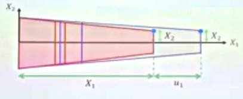
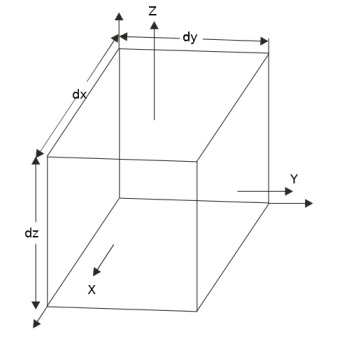
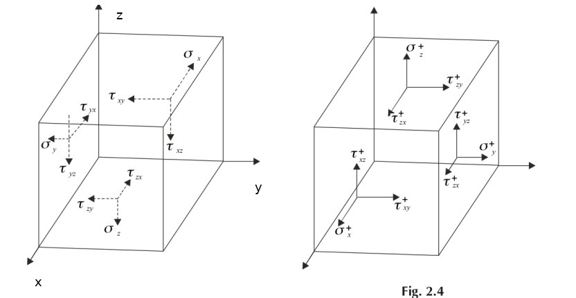

Materyel Mekaniği - 4
Potansiyel Enerji ve Denge
İlk önce denge bağlamında potansiyel enerjinin ne demek olduğunu işleyelim.
Potansiyel enerji $\Pi$ sistemin stabilitesi ile alakalıdır. Mesela alttaki resim stabilite konusunu işleyen her ders kitabında vardır, bir kapta duran topu aldım, yukarı doğru çıkatıp (bordo renk) aşağı bıraktım, top kabın dibine gidip orada kalacaktır (kırmızı renk).

Yani top ilk denge konumuna dönecektir, ve o durumda potansiyel enerjisi minimum olmuştur deriz ve bu denge stabil bir dengedir.

İkinci durumda topu orta noktada sola taşırız, top orada kalır, bu yeni bir denge noktasıdır, $\Pi$ değişmemiştir, burada nötr bir denge vardır.

Üçüncü durumda ters kavisli bir yüzey var, top üst orta noktadan başlıyor diyelim (orada durması zor olsa da), topu yine alıp sola taşıyorum, top aşağı düşecektir. Üstteki durum potansiyel enerjisinin maksimum olduğu bir durumdur, sistem stabil değildir. Rayleigh-Ritz yönteminin amacı (potansiyel enerjinin minimum olduğu) stabil denge durumunu hedefleyerek bir yaklaşık çözüme ulaşmaktır.
Bunu nasıl yaparız? Daha önce belirttiğimiz potansiyel enerjinin iki bileşeni var, ilki sistemin toplam iç gerilim (deformasyon) enerjisi. Gerilim enerji yoğunluğu $\overline{U}$ genel olarak bir materyelin stres-gerilim eğrisinin altındaki alan olarak hesaplanabilir.

Mesela üstteki gibi stres $\sigma_{ij}$ ve gerilim $\epsilon_{ij}$ arasındaki bir eğriyi düşünelim, bu eğrinin altında kalan alan, yani entegral hesabı gerilim enerji yoğunluğunu verir.
$$ \overline{U} = \int_{0}^{\epsilon_{ij}} \sigma_{ij} \mathrm{d} \epsilon_{ij} $$
Kolaylaştırıcı bir faktör, bizim bu derste kullanacağımız maddeler lineer elastik, yani stres-gerilim eğrisi alttaki gibi,

Bu durumda "eğri" yani çizgi altındaki alan basit bir üçgen hesabı,
$$ \overline{U} = \frac{1}{2} \sigma_{ij} \epsilon_{ij} $$
Fakat bu sadece tek bir boyutu halletti, mesela üstteki örnek $e_1$ yönündeki bir esnemeyi temsil ediyor olabilirdi, fakat 3 boyutlu ortamda elimizde daha fazla bileşen olduğunu biliyoruz, $\sigma_{11}$ haricinde $\sigma_{22}$ var, $\sigma_{33}$ var, $\sigma_{12}$, $\sigma_{23}$, vs.. Tüm stres/gerilim eşleri için [2, Ders 16],
$$ \overline{U} = \frac{1}{2} \sum_{i,j=1}^{3} \sigma_{ij} \epsilon_{ij} $$
Toplamı açarsak,
$$ = \frac{1}{2} (\sigma_{11}\epsilon_{11} + \sigma_{22}\epsilon_{22} + \sigma_{33}\epsilon_{33} + \sigma_{12}\epsilon_{12} + \sigma_{23}\epsilon_{23} + \sigma_{13}\epsilon_{13} + \sigma_{33}\epsilon_{33} + \sigma_{23}\epsilon_{23} + \sigma_{32}\epsilon_{32} ) $$
Son ifadeyi daha basitleştirmek mümkün, $\sigma$ ve $\epsilon$'un simetrik olduğunu unutmayalım,
$$ \overline{U} = \frac{1}{2} (\sigma_{11}\epsilon_{11} + \sigma_{22}\epsilon_{22} + \sigma_{33}\epsilon_{33} + 2 \sigma_{12}\epsilon_{12} + 2 \sigma_{13}\epsilon_{13} + 2 \sigma_{23}\epsilon_{23} ) $$
Üsttekileri mühendislik gerilimi $\gamma_{ij} = 2 \epsilon_{ij}$ ile temsil etmek mümkün,
$$ \overline{U} = \frac{1}{2} (\sigma_{11}\epsilon_{11} + \sigma_{22}\epsilon_{22} + \sigma_{33}\epsilon_{33} + \sigma_{12}\gamma_{12} + \sigma_{13}\gamma_{13} + \sigma_{23}\gamma_{23} ) $$
Eksenel Yükleme (Axial Loading)
Euler-Bernoulli kiriş formülasyonu sadece bükülmenin sebep olduğu deformasyonu hesaba kattı, bunu yaparken nötr eksen üzerindeki eksenel deformasyonu yok saydı [3, 8.4]. Euler-Bernoulli modelini eksenel yatay deformasyonu hesaba katacak şekilde genişletmek mümkündür, fakat, belki de bu iyi haber, ufak deformasyon önkabulü sayesinde eksenel yük ve bükülme deformasyonları birbirinden bağlantısız (uncoupled) hale gelir, eksenel yük sadece eksenel deformasyonu, yatay yük sadece yatay deformasyonu etkiler.

Diğer faraziyeler Euler-Bernoulli modeline benzer, düzlem bölümler düzlem kalır, Poisson oranı etkileri yok sayılır, ve yatay yer değişimi $u_1$ pürüzsüz bir fonksiyondur. Farklı bir resmi [2, Ders 15] eklersek,

Bu faraziyelerle modeli oluşturalım; üstteki resme bakarsak $u_1 = u_1(X_1)$, ve pozisyon vektör fonksiyonu olarak,
$$ x = \left[\begin{array}{c} X_1 + u_1 \\ X_2 \\ X_3 \end{array}\right] $$
Bu durumda yer değişim fonksiyonu
$$ u = x - X = \left[\begin{array}{c} u_1 \\ 0 \\ 0 \end{array}\right] $$
Hatırlarsak yaklaşık olarak gerilim tensörü
$$ \epsilon = \frac{1}{2} (\nabla u + \nabla u^T ) $$
Gradyanlar ile hesabı yaparsak sadece $\epsilon_{11}$'in sıfır olmadığını görüyoruz,
$$ \epsilon = \left[\begin{array}{ccc} \frac{\mathrm{d} u_1}{\mathrm{d} X_1} & 0 & 0 \\ 0 & 0 & 0 \\ 0 & 0 & 0 \end{array}\right] \qquad (1) $$
Bize gerekli diferansiyel denklemi kuvvet dengelerine bakarak ortaya çıkartabiliriz. Şimdi kirişin $\mathrm{d} X_1$ genişliğindeki ufak bir parçasına odaklanalım,

Bu parçanın sol ve sağındaki kuvvetlere bakarsak üstteki resim ortaya çıkar.
Oklar sola ya da sağa doğru gösterildi çünkü mesela $\sigma_{11}$ ve $\sigma_{11} + \frac{\partial \sigma_{11}}{\partial X_1} \mathrm{d} X_1$'in birbirini dengeleyeceklerini / birbirlerine karşı ortaya çıktıklarını biliyoruz, sağa doğru olan $p$ zaten dışarıdan uygulanan eksenel kuvvet. $\frac{\partial \sigma_{11}}{\partial X_1}$ kullanımı $\sigma_{11}$'in $X_1$'e oranla değişim hesabı için kullanıldı, bu oranı $X_1$'deki olan değişimle çarpınca (örnekte $\mathrm{d} X_1$) tabii ki ufak parçanın sağındaki $\sigma_{11}$ eki ortaya çıkıyor, bunu $\sigma_{11}$'e topluyoruz.
Parçanın sol ve sağındaki alan büyüklüğü benzer şekilde, solda $A$ varsa $A$'nin $X_1$'e oranlı değişimi çarpı $X_1$ değişimi bize parçanın sağındaki alan büyüklük ekini veriyor.
$X_1$ ekseni bazındaki denge denklemi o zaman alttaki gibi olur, stres hesabı kuvvet bölü birim alan olduğu için kuvveti elde etmek için stres çarpı alan gerekeceğini hatırlayalım, ayrıca $p$ kuvveti birim $X_1$ bazlı alınıyor, o zaman $p \mathrm{d} X_1$ kullanmak gerekir,
$$ \sum F_{X_1} = - \sigma_{11} A + \left( \sigma_{11} + \frac{\partial \sigma_{11}}{\partial X_1} \mathrm{d} X_1 \right) \left( A + \frac{\partial A}{\partial X_1} \mathrm{d} X_1 \right) + p \mathrm{d} X_1 = 0 $$
Formülü açarsak
$$ -\sigma_{11} A + \sigma_{11} A + \sigma_{11} \frac{\partial A}{\partial X_1} \mathrm{d} X_1 + A \frac{\partial \sigma_{11}}{\partial X_1} \mathrm{d} X_1 + \frac{\partial A}{\partial X_1} \frac{\partial \sigma_{11}}{\partial X_1} \mathrm{d} X_1^2 + p \mathrm{d} X_1 = 0 $$
$\sigma_{11} A$ terimleri iptal olur,
$$ \sigma_{11} \frac{\partial A}{\partial X_1} \mathrm{d} X_1 + A \frac{\partial \sigma_{11}}{\partial X_1} \mathrm{d} X_1 + \frac{\partial A}{\partial X_1} \frac{\partial \sigma_{11}}{\partial X_1} \mathrm{d} X_1^2 + p \mathrm{d} X_1 = 0 $$
$\mathrm{d} X_1$ dışarı çekilir, ve sağda sıfır olduğu için iptal edilebilir,
$$ \sigma_{11} \frac{\partial A}{\partial X_1} + A \frac{\partial \sigma_{11}}{\partial X_1} + \frac{\partial A}{\partial X_1} \frac{\partial \sigma_{11}}{\partial X_1} \mathrm{d} X_1 + p = 0 $$
Hala basitleştirme mümkün, dikkat edersek $\mathrm{d} X_1$ terimini kullandık ve ona "çok küçük bir parça" dedik. Bu parçayı sonsuz küçültürsek, yani limiti alırsak, ki $\mathrm{d} X \to 0$, o zaman üstteki formülde üçüncü terim yokolur,
$$
\sigma_{11} \frac{\partial A}{\partial X_1} +
A \frac{\partial \sigma_{11}}{\partial X_1}
p = 0
$$
Daha kısa bir formüle ulaştık. Fakat bize lazım olan yer değişimi, üstteki formülde bu yok. Oraya ulaşmaya çalışalım. Dikkat edersek üstteki formülde ilk iki terim sanki Calculus'ta çarpım kuralının açılmış haline benziyor, o zaman o kuralı ters yönde işletirsek, yani gruplama amaçlı geriye gidersek,
$$ \frac{\partial }{\partial X_1} (\sigma_{11} A ) + p = 0 $$
Şimdi $\sigma_{11} = E \epsilon_{11}$ formülünü hatırlayalım, bu nereden geldi? Elimizde bir tekeksenel yük var, o zaman en baz stres-gerilme ilişkisi geçerli olur, yerine koyarsak,
$$ \frac{\partial }{\partial X_1} (E \epsilon_{11} A ) + p = 0 $$
Peki $\epsilon_{11}$ nedir? Bu büyüklüğü (1)'de gördük, $\epsilon$'un tek sıfır olmayan öğesi $\epsilon_{11}$ ve orada $\frac{\mathrm{d} u_1}{\mathrm{d} X_1}$ değeri var. Bunu üstteki formüle koyalım,
$$ \frac{\partial }{\partial X_1} \left( E A \frac{\mathrm{d} u_1}{\mathrm{d} X_1} \right) + p = 0 $$
Böylece içinde yer değişimi içeren bir formül elde etmiş oldum, $u_1$ yer değişimidir.
Bu denklemi artık çözüm için kullanabiliriz. Tasarımcı olarak biz Young'in Genliği $E$'yi biliriz, kirişin herhangi bir noktasındaki satıhsal alan $A$'yi biliriz, kirişe uygulanan yük $p$'yi biliriz, tüm bunları kullanarak yer değişim $u_1$'i üstteki formülle bulabiliriz. Tek bilinmeyen $u_1$ çünkü.
Şimdi bu noktada bazı püf noktalar ortaya çıkıyor; çünkü eğer $E,A$ büyüklükleri $X_1$'in fonksiyonu iseler çözüm daha karmaşık hale gelebilir çünkü üstteki formülde dış türev $X_1$'e göre. Fakat şimdiye kadar bu derste $X_1$'e bağlı bir $E$ görmedik, yani Young'in Genliği kirişin her noktasında aynı, özetle sabit. Sabit ise $E$ diferansiyelin dışına alınabilir. $A$ aynı şekilde. Eğer $A$ değişken ise o zaman Calculus çarpım kuralı uygularız.
O zaman iki senaryo şöyle olabilir, $E$ sabit ama $A$ değil,
$$ E \frac{\partial A}{\partial X_1} \frac{\partial u_1}{\partial X_1} + EA \frac{\partial^2 u_1}{\partial X_1} + p = 0 $$
Hem $E$ hem $A$ sabit,
$$ E A \frac{\partial^2 u_1}{\partial X_1} + p = 0 $$
Üç Boyutta Eşyönlü (Isotropic) Stres-Gerinim İlişkisi
Şimdi bir kütleye uygulanan stres sonucu ortaya çıkan gerinimi üç boyut için formülize edeceğiz [6, sf. 871]. Maddenin lineer elastik ve eşyönlü olduğu farz edilecek, yani uygulanan bir stres farklı yönlerde etkilere sebep olursa bu etki her yönde eşit şekilde ortaya çıkacak. Aradığımız formül Hooke Kanunu'nun üç boyutlu hali, buna bazı kaynaklar (listelenen şartlar için) Genelleştirilmiş Hooke Kanunu ismi de verebiliyor.
Bir gövdeyi her eksen üzerinden $\sigma_x$, $\sigma_y$, $\sigma_z$ streslerine tabi tutacağız ve sonuçları inceleyeceğiz. Mesela temel Hooke Kanunu $\sigma = E \epsilon$'den yola çıkarak $\epsilon_x^x = \sigma_x / E$ diyebiliriz, $\epsilon_x^x$ büyüklüğündeki üstsimge gerinimin $x$ stresi sebebiyle olduğunu söylüyor, diğerleri de olacak.

Fakat stres-gerinim ilişkisi sadece tek eksenle kısıtlı değil. Bir eksende stres uyguladığımızda bunun diğer eksenler üzerinde de etkileri olacaktır. Çünkü madde bir yöne uzayıp şekil değiştirir fakat diğer eksenlerde ufalma olacağı için o eksenlerde eksi yönde gerinim olur.
Mesela üstte ortadaki resmi düşünürsek, $\sigma_y$ stresi uygulandığında $x$ yönünde bir negatif gerinim olur, çünkü madde o eksen bağlamında içe doğru daralır, şekil değiştirir, bunu formül
$$ \epsilon_x^y = \frac{- v \sigma_y}{E} $$
ile gösterebiliriz ki $v$ Poisson oranı. Dikkat $y$ yönündeki stresin etkisi sadece $E$ sabiti ile değil $v/E$ sabiti ile $y$ eksenine yansıyor. Bu normal olmalı çünkü bir eksene direk uygulanan stres ve onun aynı eksende yol açtığı gerinim diğer eksenlerdeki yan etki gibi görülebilecek gerinimler ile aynı olamaz.
Benzer şekilde $z$ stresinin yol açtığı gerinim
$$ \epsilon_x^z = \frac{- v \sigma_z}{E} $$
Tum bu gerinimleri toplarsak $x$ eksenindeki toplam gerinim elde edilir,
$$ \epsilon_x = \epsilon_x^x + \epsilon_x^y + \epsilon_x^z $$
$$ = \frac{\sigma_x}{E} - \frac{v \sigma_y}{E} - \frac{v \sigma_z}{E} $$
Benzer şekilde $y$ ve $z$ yönündeki gerinimler de elde edilebilir,
$$ \epsilon_y = \frac{\sigma_y}{E} - \frac{v \sigma_x}{E} - \frac{v \sigma_z}{E} $$
$$ \epsilon_z = \frac{\sigma_z}{E} - \frac{v \sigma_x}{E} - \frac{v \sigma_y}{E} $$
Son üç denklemi birleştirip stresler solda olacak şekilde düzenlersek,
$$ \sigma_x = \frac{E}{(1+v)(1-2v)} [\epsilon_x (1-v) + v \epsilon_y + v \epsilon_z ] $$
$$ \sigma_y = \frac{E}{(1+v)(1-2v)} [ v \epsilon_x + \epsilon_y (1-v) + v \epsilon_z ] $$
$$ \sigma_z = \frac{E}{(1+v)(1-2v)} [v \epsilon_x + v \epsilon_y + \epsilon_z (1-v) ] $$
Ayrıca normal stresler için kullanılan Hooke Kanunu $\sigma = E \epsilon$ benzer bir şekilde kaykılma stresi ve kaykılma gerinimi için de geçerlidir, ama sabit $E$ yerine $G$ kullanılır,
$$ \tau = G \gamma $$
$G$ sabitine Kaykılma Genliği (Shear Modulus) ismi veriliyor. 0 zaman üç boyutta ortaya çıkabilecek üç kaykılma stresi
$$ \tau_{xy} = G \gamma_{xy} \qquad \tau_{yz} = G \gamma_{yz} \qquad \tau_{zx} = G \gamma_{zx} $$
$G$ ile $E$ arasında bir ilişki var, bu formül
$$ G = \frac{E}{2(1+v)} $$
Bu formülün türetilmesi için [7, sf. 70]'e bakılabilir.
Şimdi üstteki tüm formülleri matris formunda bir araya koyabiliriz,
$$ \left[\begin{array}{c} \sigma_x \\ \sigma_y \\ \sigma_z \\ \tau_{xy} \\ \tau_{yz} \\ \tau_{zx} \end{array}\right] = \frac{E}{(1+v)(1-2v)} \left[\begin{array}{cccccc} 1-v & v & v & 0 & 0 & 0 \\ v & 1-v & v & 0 & 0 & 0 \\ v & v & 1-v & 0 & 0 & 0 \\ 0 & 0 & 0 & \dfrac{1-2v}{2} & 0 & 0 \\ 0 & 0 & 0 & 0 & \dfrac{1-2v}{2} & 0 \\ 0 & 0 & 0 & 0 & 0 & \dfrac{1-2v}{2} \end{array}\right] \left[\begin{array}{c} \epsilon_x \\ \epsilon_y \\ \epsilon_z \\ \gamma_{xy} \\ \gamma_{yz} \\ \gamma_{zx} \end{array}\right] $$
Matrisin sol alt kısmı doldurulmadı orası simetri sebebiyle sağ üst kısım ile aynı.
Eğer gerinim değişkenlerini eşitliğin solunda stresleri sağda tutmak istersek,
üstteki matrisin tersini bulmamız lazım [8, sf. 161], sembolik ters alma
işlemini sympy ile yapabiliriz,
import sympy as sym
E, v = sym.symbols('E v')
matrix = E/((1+v)*(1-2*v))*sym.Matrix([[1-v,v,v,0,0,0],
[v,1-v,v,0,0,0],
[v,v,1-v,0,0,0],
[0,0,0,(1-2*v)/2,0,0],
[0,0,0,0,(1-2*v)/2,0],
[0,0,0,0,0,(1-2*v)/2]])
sym.latex(matrix.inv())
$$ \left[\begin{matrix}\dfrac{1}{E} & - \dfrac{v}{E} & - \dfrac{v}{E} & 0 & 0 & 0\\- \dfrac{v}{E} & \dfrac{1}{E} & - \dfrac{v}{E} & 0 & 0 & 0\\- \dfrac{v}{E} & - \dfrac{v}{E} & \dfrac{1}{E} & 0 & 0 & 0\\0 & 0 & 0 & \dfrac{2 v + 2}{E} & 0 & 0\\0 & 0 & 0 & 0 & \dfrac{2 v + 2}{E} & 0\\0 & 0 & 0 & 0 & 0 & \dfrac{2 v + 2}{E}\end{matrix}\right] $$
Bir basitleştirme daha yapılabilir, bunu kendimiz görebiliyoruz, $1/E$ dışarı çekelim, hepsini bir araya koyalım,
$$ \left[\begin{array}{c} \epsilon_x \\ \epsilon_y \\ \epsilon_z \\ \gamma_{xy} \\ \gamma_{yz} \\ \gamma_{zx} \end{array}\right] = \frac{1}{E} \left[\begin{array}{cccccc} 1 & -v & -v & 0 & 0 & 0 \\ -v & 1 & -v & 0 & 0 & 0 \\ -v & -v & 1 & 0 & 0 & 0 \\ 0 & 0 & 0 & 2(1+v) & 0 & 0 \\ 0 & 0 & 0 & 0 & 2(1+v) & 0 \\ 0 & 0 & 0 & 0 & 0 & 2(1+v) \end{array}\right] \left[\begin{array}{c} \sigma_x \\ \sigma_y \\ \sigma_z \\ \tau_{xy} \\ \tau_{yz} \\ \tau_{zx} \end{array}\right] $$
Düzlem Stresi (Plane Stres)
Eğer bir gövde sadece iki boyutta strese tabi tutuluyorsa bu gövdenin "düzlem stresi" durumunda olduğu söylenir [7, sf. 70]. Bu tür stres / gerinimde $\sigma_z = \tau_{xz} = \tau_{yz} = 0$'dir yani üçüncü boyut $z$ eksenine dönük hiçbir aksiyon yoktur. Bu durumda Genel Hooke Kanunu alttaki üç denkleme indirgenebilir,
$$ \epsilon_x = \frac{1}{E} (\sigma_x - v \sigma_y ) $$
$$ \epsilon_y = \frac{1}{E} (\sigma_y - v \sigma_x ) $$
$$ \gamma_{xy} = \frac{1}{G} \tau_{xy} $$
Üç boyutlu durumda olduğu gibi üstteki formülleri matris formunda gösterebiliriz,
$$ \left[\begin{array}{c} \epsilon_{x} \\ \epsilon_{y} \\ \gamma_{xy} \end{array}\right] = \frac{1}{E} \left[\begin{array}{ccc} 1 & -v & 0 \\ -v & 1 & 0 \\ 0 & 0 & 2(1+v) \end{array}\right] \left[\begin{array}{c} \sigma_x \\ \sigma_y \\ \tau_{xy} \end{array}\right] $$
Yine bir yer değiştirme işlemi yapılabilir, üstteki matrisin tersini alırsak stresler sola geçer,
$$ \left[\begin{array}{c} \sigma_x \\ \sigma_y \\ \tau_{xy} \end{array}\right] = \frac{E}{(1-v)^2} \left[\begin{array}{ccc} 1 & v & 0 \\ v & 1 & 0 \\ 0 & 0 & \dfrac{(1-v)}{2} \end{array}\right] \left[\begin{array}{c} \epsilon_{x} \\ \epsilon_{y} \\ \gamma_{xy} \end{array}\right] $$
Bazı formülasyonlarda üstteki matrisin çarpan sabitin böleninde $(1+v)$ görülebiliyor, bu durumda $(1-v)^2=(1+v)(1-v)$ olduğunu hatırlayalım, ve ona göre matrisin tüm öğeleri $(1-v)$ ile bölünmüş olacaktır, farketmez, her iki form da aynı sonucu verir.
Elastiklik Denge Denklemleri
Gerinme (yer değişim) ve stres arasındaki ilişki gösterildi, şimdi tüm kuvvetlerin arasındaki denge denklemlerine bakalım. Eğer dışarıdan her eksen üzerinde, X, Y, Z kuvvetleri uygulansa, ya da uygulanmasa bile, mevcut direk stresler $\sigma$ ve yüzeylere paralel giden kaykılma stresleri $\tau$ arasındaki denge ilişkisi ne olurdu?
Önce idealize edilmiş her kenarı ufak $\mathrm{d} x$, $\mathrm{d} y$, $\mathrm{d} z$ boyutlarında olan bir küp düşünelim [4, sf. 11], küpün kenarlarına $X,Y,Z$ kuvvetleri uygulanıyor.

Bu kuvvetlerin ortaya çıkardığı direk ve kaykılma stresleri alttaki gibi gösterilebilir.

Küpün kordinate eksenlerine paralel olan yüzü nötr diğerleri "artı yüzleri" olarak simgelendirildi, mesela üst sağdaki resimde okuyucuya yakın olan yüzden dışarı doğru çıkan stres $\sigma_x^+$ sembolü, aynı yüzdeki kaykılma stresleri benzer şekilde artı işaretini alıyor, $x$ eksenine doğru / dik oldukları için ilk altsembolleri $x$, paralel ilerledikleri eksen ikinci alt sembol, mesela sağ yönünü gösteren kaykılma stresi $\tau_{xy}^+$. Artı yüzün tam karşısındaki direk stres $\sigma_x$, onda artı işareti yok.
Eğer bir denge formülü bulmak istiyorsak her yüz için bu eşitlikleri ayrı ayrı kurabiliriz. Mesela $x$ ekseni ile başlayalım, iki stresten bahsettik zaten, $\sigma_x^+$ ve $\sigma_x$. Fakat bu yönde yani $x$ ekseni boyunca etki eden stresler sadece onlar değil, bu yönde olan kaykılma stresleri de var. İşaret edilen yön ikinci altsembol demiştik, orada $x$ diyen tüm kaykılma streslerini kolayca bulabiliriz, $\tau_{yx}$, $\tau_{zx}$, $\tau_{yx}^+$, $\tau_{zx}^+$.
Denge formülünden önce artı yüzleri hakkında bir ek bilgi daha verelim, bu yüzlerin stresini karşısındaki stresi baz alarak formülize edebiliriz, yani $\sigma_x^+$ formülü $\sigma_x$ bazlı gösterilebilir, bunu kısmı türev ile yaparız,
$$ \sigma_x^+ = \sigma_x + \frac{\partial \sigma_x}{\partial x} \mathrm{d} x $$
Türev bağlamında üstteki akla yatkın olmalı, eğer $\partial \sigma_x / \partial x$ bir değişim oranınıdır, onu ufak değişim miktarı $\mathrm{d} x$ ile çarpıp $\sigma_x$'e eklersek $\sigma_x^+$ elde edebiliriz. Benzer mantığı tüm artı yüzlerdeki stresler için kullanabiliriz.
Bir ek konu daha, stres daha önce belirtiğimiz gibi kuvvet / alan hesabıdır, fakat denge formülü kuvvetler üzerinden yapılacak o zaman bildiğimiz, bulduğumuz her stres büyüklüğünü onun etki ettiği alan ile çarpmamız gerekir, ki böylece kuvvet elde edelim ve bu kuvvetleri toplayarak sıfır eşitleyip denge formülünü bulalım. Yine $x$ örneği, $\sigma_x$'in etki ettiği alan $\mathrm{d} y \mathrm{d} z$ alanıdır.
Devam edelim, $x$ ile başlayalım, o yöndeki denge için $x$ yönündeki tüm kuvvetleri toplamak gerekir, artı yüzdeki kuvveti pozitif yapacağız (bunu hatırlaması kolay), tersini gösteren kuvvet ise negatif olacak, $X$ gövdeye uygulanan birim hacimdeki dış kuvvettir, o zaman tüm $x$ toplamı
$$ \sigma_x^+ \mathrm{d} y \mathrm{d} z - \sigma_x \mathrm{d} y \mathrm{d} z + \tau_{yx}^+ \mathrm{d} x \mathrm{d} z - \tau_{yx} \mathrm{d} x \mathrm{d} z + \tau_{zx}^+ \mathrm{d} x \mathrm{d} y - $$ $$ \tau_{zx} \mathrm{d} x \mathrm{d} y + X \mathrm{d} x \mathrm{d} y \mathrm{d} z = 0 $$
Artı yüzlerdeki stresleri diğer yüz bağlamında temsil edebiliriz demiştik, bunu yapalım,
$$ (\sigma_x + \dfrac{\partial \sigma_x}{\partial x} \mathrm{d} x )\mathrm{d} y \mathrm{d} z - \sigma_x \mathrm{d} y \mathrm{d} z + (\tau_{yx} + \dfrac{\partial \tau_{yx}}{\partial y} \mathrm{d} y ) \mathrm{d} x \mathrm{d} z - \tau_{yx} \mathrm{d} x \mathrm{d} z + $$ $$ (\tau_{zx} + \dfrac{\partial \tau_{zx}}{\partial z} \mathrm{d} z ) \mathrm{d} x \mathrm{d} y - \tau_{zx} \mathrm{d} x \mathrm{d} y + X \mathrm{d} x \mathrm{d} y \mathrm{d} z = 0 $$
Basitleştirip her şeyi $\mathrm{d} x \mathrm{d} y \mathrm{d} z$ ile bölersek,
$$ \frac{\partial \sigma_x}{\partial x} + \frac{\partial \tau_{yx}}{\partial y} + \frac{\partial \tau_{zx}}{\partial z} + X = 0 $$
Benzer hesabı $y$, $z$ icin yaparsak,
$$ \frac{\partial \tau_{xy}}{\partial x} + \frac{\partial \sigma_y}{\partial y} + \frac{\partial \tau_{zy}}{\partial z} + Y = 0 $$
$$ \frac{\partial \tau_{xz}}{\partial x} + \frac{\partial \tau_{yz}}{\partial y} + \frac{\partial \sigma_z}{\partial z} + Z = 0 $$
İki Boyutta Elastiklik Denklemleri
İki boyut için üstteki üç denklemin $z$ yönünde hiçbir stres olmayan halini düşünebiliriz, üçüncü denklem tamamen yokolur, kalanlardan
$$ \frac{\partial \sigma_x}{\partial x} + \frac{\partial \tau_{yx}}{\partial y} + \cancel{\frac{\partial \tau_{zx}}{\partial z}} + X = 0 $$
$$ \frac{\partial \tau_{xy}}{\partial x} + \frac{\partial \sigma_y}{\partial y} + \cancel{\frac{\partial \tau_{zy}}{\partial z}} + Y = 0 $$
Yani [9, sf. 331]
$$ \frac{\partial \sigma_x}{\partial x} + \frac{\partial \tau_{yx}}{\partial y} + X = 0 $$
$$ \frac{\partial \tau_{xy}}{\partial x} + \frac{\partial \sigma_y}{\partial y} + Y = 0 $$
Kaynaklar
[1] Petitt, Intro to the Finite Element Method, University of Alberta, https://www.youtube.com/watch?v=2iUnfPRk6Ro&list=PLLSzlda_AXa3yQEJAb5JcmsVDy9i9K_fi
[2] Petitt, Intro to the Continuum Mechanics, University of Alberta, https://www.youtube.com/playlist?list=PLLSzlda_AXa3N5jaDART7kimBlYz1dFnX
[3] Adeeb, Introduction to Solid Mechanics https://engcourses-uofa.ca/books/introduction-to-solid-mechanics/
[4] Bhavikatti, Finite Element Analysis
[5] Khennane, Introduction to Finite Element Analysis Using MATLAB and Abaqus
[6] Logan, A First Course in the FEM, 5th Ed
[7] Craig, Mechanics of Materials, Third Edition
[8] Khennane, Introduction to Finite Element Analysis using Matlab and Abaqus
[9] Pepper, The Finite Element Method
Yukarı